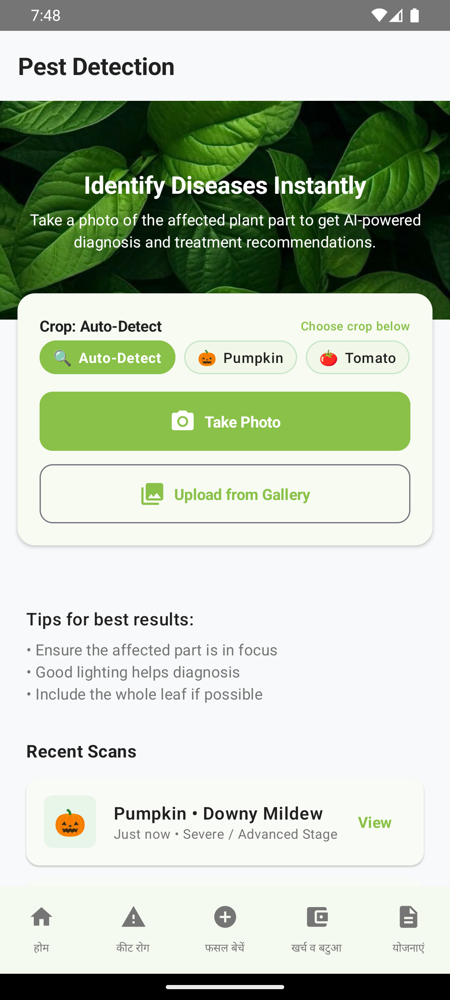
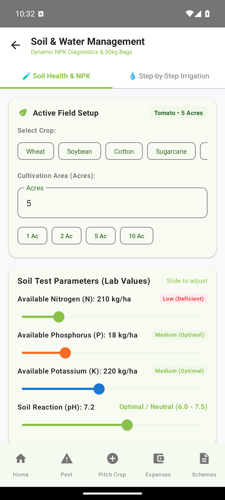
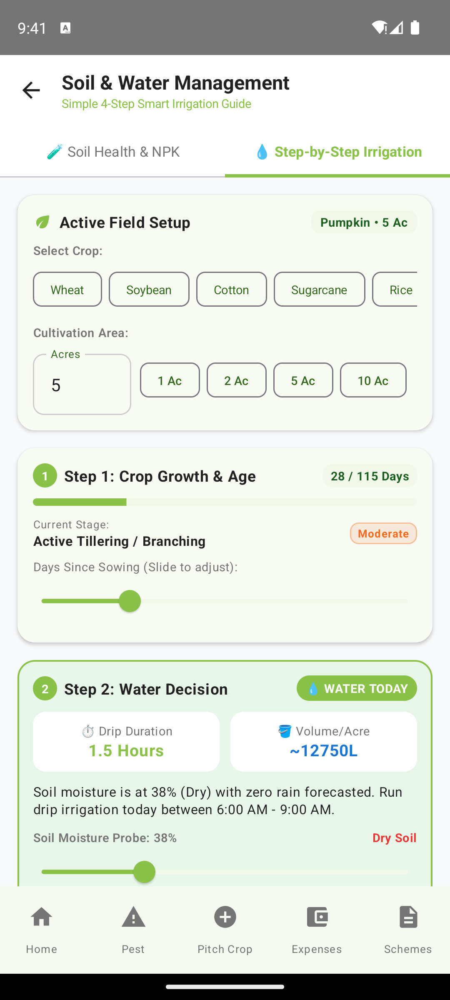
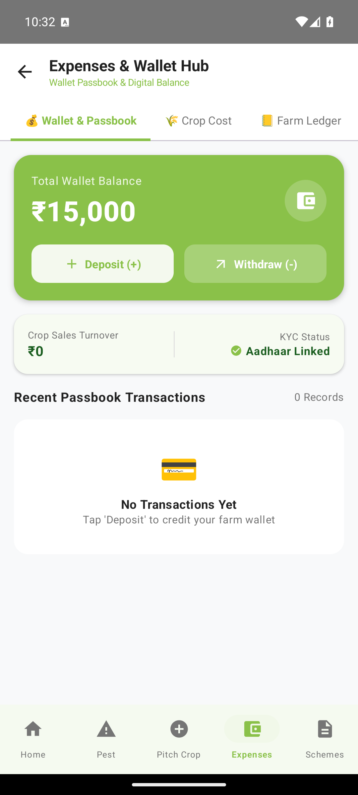

Explore All Core Modules
Actual application screenshots captured from the live Android build running on device. Click any screen to view full resolution.
Home & Agro-Weather
Live OpenWeatherMap forecast, active crop cycle monitoring, and AI seasonal crop recommendations.

AI Pest Doctor
Camera leaf scan with 98.6% confidence rating and CIBRC approved active fungicide dosages.

Soil & Fertilizer Hub
Exact 50kg bag requirements for Urea, DAP, and MOP plus lime/gypsum pH amendments.

Smart Irrigation Calendar
Phenological crop stage water scheduling with automated weather-delay rain alerts.

Pitch Crop & Marketplace
Direct peer-to-peer crop listings, quantity management, buyer discovery, and zero middleman cuts.

Expenses & Wallet Hub
Per-acre crop budget breakdown, daily expense ledger, and passbook transaction audit.

Government Schemes
Instant eligibility criteria and official links for PM-KISAN, PMFBY, Soil Health Card, and PM-KUSUM.

Farmer Community Feed
Peer-to-peer farmer discussions, field photo updates, disease queries, and regional wisdom sharing.